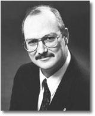

|

PersonalSkills
- Project management skills
- Layout and Design Capibilities
- Proven leadership abilities in large and small organizations.
- Proven Communication skills both verbal and written.
- Works well with others on and off the job.
- Task driven and will see the project through to the end, regardless of time.
Computer skills
- Windows 95 environment
- MS Office 97
- Corel WP 7.0
- Homesite 4.0 (HTML Editor)
- Spread sheets and Data bases.
- Quick learner who can adapt quickly.
Education
- Masters Degree in Learning Resources ( Communications & Technology), Graduated Fall, 1998.
Memorial University of Newfoundland.
- B. A. with a Major in History, & B. Ed., Memorial University of Newfoundland.
Employment History
- Instructional Design Specialist,Continuing Education, Memorial University of Newfoundland.
Designing Web-based distance education courses at Memorial University of NF, Canada.
The position involves 60% project management and 40% instructional design. The position entails working with content experts, graphics, print, and computer specialists to develop university
courses.
Trainor of Enuminators, District Returning Officers and Poll Clerks with Elections
Canada for the June 1997 Federal election. Central Polling Station Supervisor.
Computer Lab Assistant at the Learning Resources Labratory;
Faculty of Education, Memorial University of NF.
Agent with Industrial Alliance, Hallett Crescent, St. John's.
President/Owner: Venture Consultants, St John's, NF. dealing with Insurance
Consulting and Personal Financial Planning.
Insurance Agent, Great-West Life Assurance Co., St. John's,
NF, specializing in the selling and marketing of personal lines of insurance.;
Insurance Agent, Prudential Assurance, St. John's, NF.
High School Teacher and Work experience coordinator with St.
Stephen's High School, Stephenville, NF.
Work Samples
Career Achievements/Affiliations
In 1998, completed a national
evaluation on the National Coaching Certification Technical II course for the
sport of judo.
In 1993-95, I led a committee in designing and producing a
curriculum for Judo Canada, the National Sports Governing Body.
Eight years as Vice President of Judo Canada, a National Sports Governing Body
with 23,000 members.
Designed a curriculum and evaluation methodology for the NF & Lab. Judo Assoc. in 1996.
Designed a curriculum for a Work Experience Program at St. Stephen's High
School in Stephenville. The program served three classrooms under three teachers
for five years. It involved basic literacy, work and life skills.
Designated Model Coach with the Coaching Association of Canada in 1996.
Member of the NF & Lab. Judo Hall of Fame.
Past President of the NF & Lab. Judo Association.
Chair Person of the NF & Lab. Judo Association Grading Board
and Coaching Education Committee's.
Tom L. Gallant M. Ed.
3 Fahey Street
St. John's, NF, CA A1G 1G3
1(709)747 3009 (H)
1(709)747 3009 (F)
tgallant@postal.ce.mun.ca
|
|